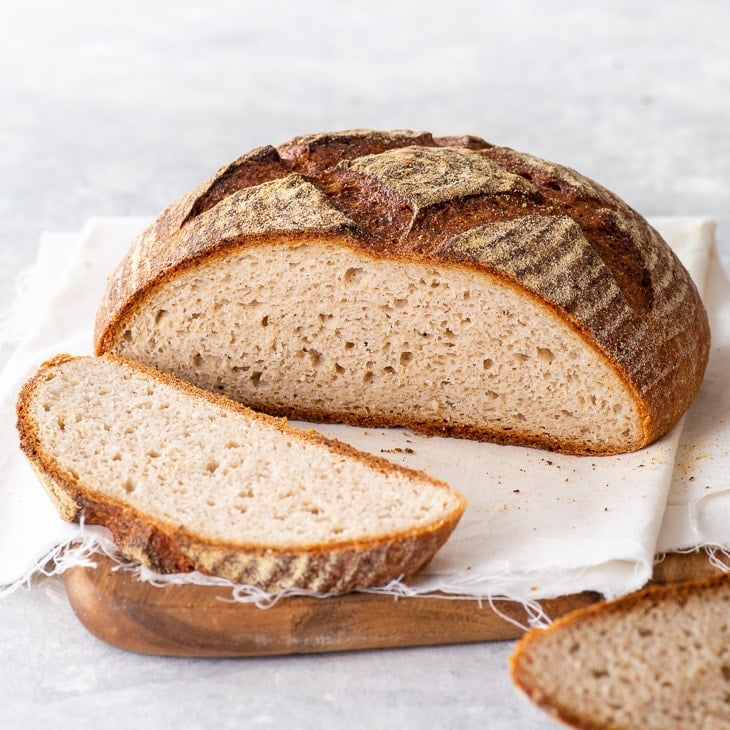

Gluten Free Bread

Description
This is a recipe for my favorite gluten free artisan loaf. I have stolen the recipe from The Loopy Whisk but I am adding my own sourdough twist!
This is the first gluten free loaf I have wanted to make over and over again, and I hope you do, too!
Ingredients
- 140 g gluten free sourdough starter
- 20 g sugar
- 320 g warm water, divided
- 15 g powdered psyllium husk
- 60 g buckwheat flour
- 100 g potato starch
- 90 g brown rice flour
- 10 g kosher salt
- 12 g apple cider vinegar
Method
- Mix together the psyllium husk and 240 g (1 cup) water. After about 15 - 30 seconds, a gel will form.
- In a large bowl, mix together the buckwheat flour, potato starch, brown rice flour and salt, until evenly combined.
- Add the sourdough starter, psyllium gel, and apple cider vinegar to the dry ingredients. Knead the dough until smooth and it starts coming away from the bowl, about 5 - 10 minutes. You can knead by hand or using a stand mixer with a dough hook.
- Transfer the bread to a lightly oiled surface and knead it gently, forming it into a smooth ball. Place the dough into a lightly oiled bowl, seam side down, cover with a damp tea towel and allow to rise in a warm place for about 1 hour or until doubled in size.
- Once risen, turn the dough out onto a lightly floured surface, and knead it gently while forming it into a tight ball (see post for step-by-step photos). Flip it seam side down onto a part of the work surface that isn't covered in flour and rotate in place to seal the seams.
- Place the dough into a 7 inch round proofing basket that you've dusted with some brown rice flour with the seams facing upwards. Cover with a damp tea towel and proof in a warm place for about 1 hour or until doubled in size.
- While the loaf is proving, pre-heat the oven to 480 ºF (250 ºC) with a cast iron skillet on the middle rack or a Dutch oven/combo cooker on the lower middle rack. If you're using a skillet, place a baking tray on the bottom rack of the oven.
- Once the dough has doubled in size, turn it out of the bread basket onto a piece of baking paper and score the top with a pattern of choice (the easiest pattern is a cross, about ¼ - ½ inch deep), using a bread lame or sharp knife. Take the hot cast iron skillet or Dutch oven/combo cooker out of the oven and then transfer the bread along with the baking paper into it.
For a skillet or combo cooker, this is easiest by sliding a pizza peel or baking sheet underneath the baking paper and then using it to slide the bread along with the baking paper gently into the hot skillet/combo cooker. For a Dutch oven, use the sides of the baking paper as handles to transfer the bread into it.
- If using a skillet: place the skillet in the oven, pour hot water into the bottom baking tray, add 3 - 4 ice cubes around the bread (between the baking/greaseproof paper and the skillet), and close the oven door.
- Bake at 480 ºF (250 ºC) with steam for 20 minutes - don't open the Dutch oven or the oven doors during this initial period, as that would allow the steam to escape out of the oven.
- After the 20 minutes, remove the bottom tray with water from the oven (for cast iron skillet) or uncover the Dutch oven/combo cooker, reduce the oven temperature to 450 ºF (230 ºC), and bake for a further 40 - 50 minutes in a steam-free environment. The final loaf should be of a deep, dark brown colour. If the loaf starts browning too quickly, cover with a piece of aluminium foil, shiny side up, and continue baking until done.
- Transfer the loaf onto a wire cooling rack to cool completely.